Week 7
Geospatial
Visualization
Lets start with some perceptual issues that affect all types of
visualization.
Visual contrasts established by manipulating perceptual
qualities
the following are retinal variables - perceived
immediately and effortlessly - fundamental units of visual
communication
- Size
- Value (saturation)
- Orientation
- Texture
- Shape
- Position
- Hue

Information represented in a visual display is
characterized by
- Number of dimensions (things being measured)
- Length of each dimension (number of possible values in each
dimension)
- Scale of measurement for each dimension
- nominal (categorical) (associative, selective) - distinct
categories should be obvious (e.g. representations of census
data on religion, or gender, or martial status or hair
color)
- ordered - determine relative ordering - which one is
'more' than the other should be obvious (e.g.
representations of questionnaire answers with low, medium,
high options)
- quantitative - determine amount of difference between
ordered values - how much 'more' should be obvious (e.g.
representations of census data on age in years or income in
dollars)
Nominal - User interested in categorizing
In associative perception
the viewer ignores variation in one visible dimension in reading
the remainder of the display
An associative variable does not affect the visibility of other
dimensions (e.g. we can recognize hue regardless of
orientation.) A variable is dissociative if visibility is
significantly reduced for some values along that dimension (e.g.
its hard to determine hue of a very thin line or small dot)
Hue, Orientation, Texture, Shape, Position are associative
Size and Value are dissociative - they dominate perception and
disrupt processing of other correlated dimensions
In selective perception
viewer attempts to isolate all instances of a given category and
perceptually group them into a single image. The task is to
ignore everything but the target value on the dimension of
interest - to see at a glance where all the targets are within
the display
All the variables except shape are selective
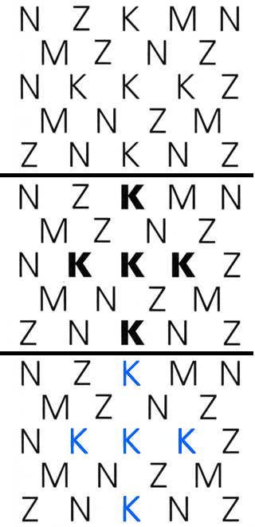
In ordered perception
the viewer must determine the relative ordering of values along a
perceptual dimension. Given any two visual elements, a natural
ordering must be clearly apparent so the element representing
'more' of the corresponding quality is immediately obvious
Position, size, and value are ordered
In quantitative perception
the viewer must determine the amount of difference between two
ordered values. The user does not need to refer to an index or key
- the relative magnitudes must be immediately apparent
Position and size are quantitative
Visual variables differ substantially in length:
- Shape is longest - almost infinite variety
- Position in 2D space is limited by display size and
resolution, but very fine grained
- Size and color 10-15
- Value and texture support less than 10
- Orientation is shortest - confusion arises if more than 4
levels are attempted
here are some
more examples from our textbook:
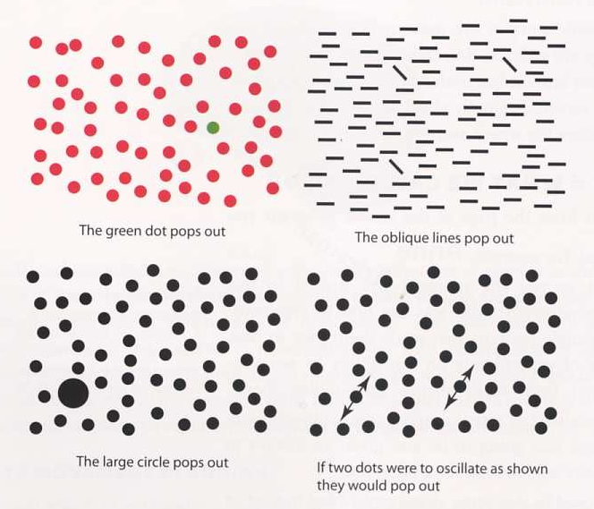
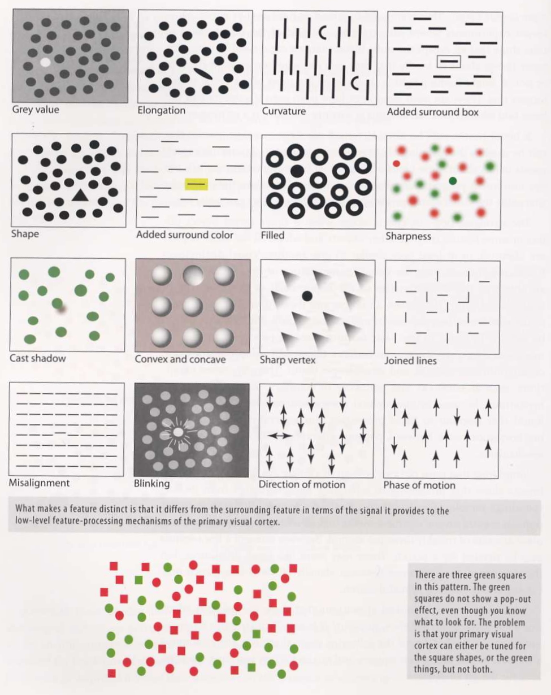
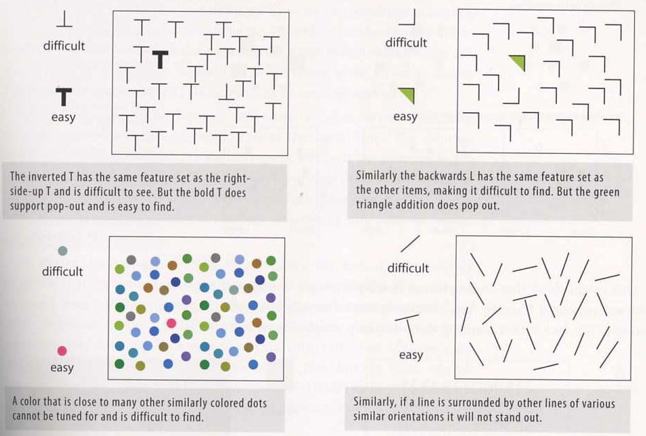
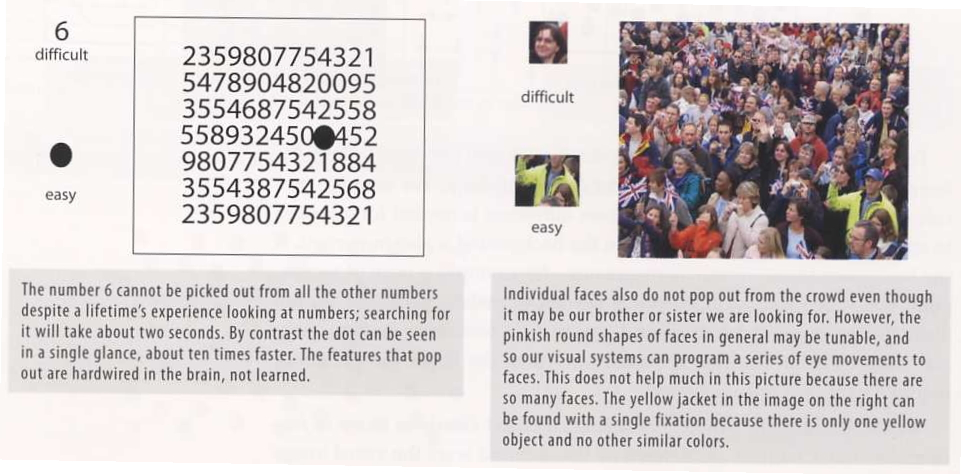
Back to Colour Blindness
lets run it on
one of the 'obvious' examples above ... its not that obvious if
you are colour blind.
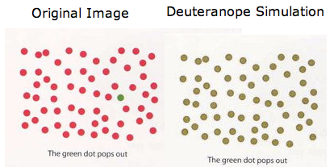
This chapter from Thematic Cartography and Geovisualization, 3rd ed.
by Slocum, McMaster, Kessler, and Howard gives a nice introduction on
mapping data to symbols.
A lot of data today can represented geographically, as the
popularity of Google maps / earth can attest to, so its a nice
place to start looking at details.
Nature
of Geographic Phenomena:
Spatial Dimension
- 0d -
point phenomena located in 2d or 3d space (e.g. data collected
at weather monitoring stations)
- 1d -
linear phenomena (e.g. the path an AUV takes while taking
measurements)
- 2d -
areal phenomena (e.g. data collected on the surface of a lake)
- 2.5d -
volumetric phenomena - each x, y position has a single z value
associated with it (e.g. the maximum depth at any point in the
lake)
- 3d -
volumetric phenomena - each x, y, z position has a value
associated with it (e.g. the ph values collected at various
points and depths in the lake)
Discrete vs Continuous and Abrupt
vs Smooth Phenomena
discrete - occur at distinct locations (and
have a space between them)
continuous - occur throughout a region of
interest
abrupt - can change suddenly
smooth - change gradually
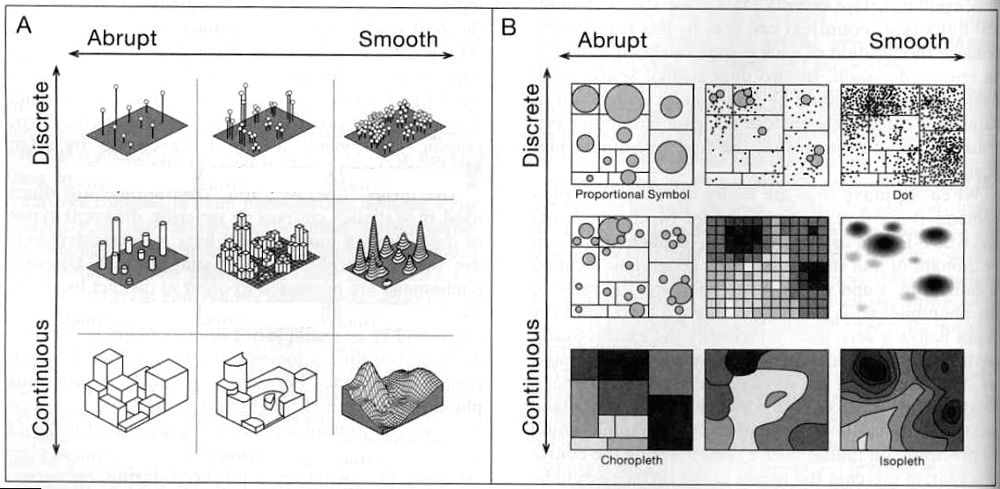
Figure 5.1
from Thematic Cartography showing phenomena and appropriate ways
of representing them
Distinction between data that has
been collected to represent a phenomenon and the phenomenon being
mapped
ie
we
are
typically
collecting
data
at
discrete
sites (weather stations, well sites) or aggregating over small
regions (counties, states) where the actual phenomena being
modeled is continuous. Other times we are collecting
discrete data on a discrete phenomena.
Type of
visualization used depends both on the nature of the underlying
phenomenon and the purpose of the map
Levels
of Measurement:
qualitative
- nominal - grouping (categorization) but no ordering of those
categories (eg census data on religion or whether you call a
carbonated soft drink pop / soda / coke)
quantitative
- ordinal - categorization plus ordering of those categories
(e.g. low, medium, high)
- numerical
- interval - ordering of the data plus explicit numerical
differentiation between those categories (e.g. temperature
values) with an arbitrary
zero point - e.g. SAT scores, temperature in F & C
- getting 2x an SAT score doesn't mean you are twice as
smart
- 20 degrees C is not twice as hot as 10 degrees C
- ratio - ordering of the data plus explicit numerical
differentiation between those categories (e.g. temperature
values) with a non-arbitrary zero point
(e.g. temperatures in degree kelvin)
Visual Variables:
visual
variables for qualitative
should reflect only a nominal level of measurement - i.e.
there shouldn't be a sense that one value is 'more' than another,
just that they are different.
- orientation
- direction/orientation of the marks/symbol
- shape -
different shapes are used
- arrangement
-
different
arrangement
of
marks
making
up
the
symbol
- hue -
different colors are used but careful choices need to be
made here so there is NO sense of 'less' to 'more' in the
different hues
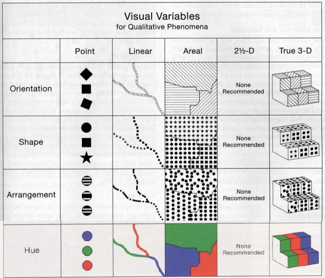
Figure 5.4
from Thematic Cartography
so for
example as I look at the areal visualization I don't (and I
shouldn't) get a sense of which area is higher or lower, or has
more cows, etc.
Why are 2.5D representations not recommended for qualitative
phenomena?
note that only different hues are used for qualitative data - not
saturation or lightness which have an obvious ordering
much of this work was done at a
time when a line plotter was the tool to make drawings like
this, giving very high resolution vector black and white drawing
capability. Today those maps still exist but more work is done
on bitmapped displays with lower resolution but a greater use of
colour.
visual
variables for quantitative
should reflect ordinal, interval, or ratio level of measurement
- spacing
(texture) - smaller spacing between marks suggest higher value
- size -
larger symbol or larger marks making up the symbol suggests a
higher value
- perspective
height
-
higher
elevation
suggests
a
higher
value
(cant be used for 3D phenomena because all 3 dimensions are
already in use)
- color
(hue) - what is the dominant wavelength (red, green, blue, etc
but careful choices need to be made here so there IS a sense
of 'less' to 'more' in the progression on hues)
- color
(lightness) - how light or dark the color is (light green,
dark green)
- color
(saturation) - how far is the intensity is from grey (bright
red, muted red)
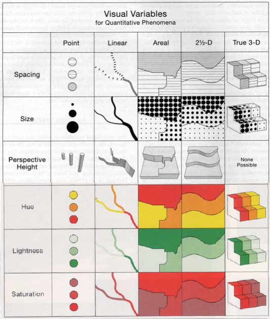
so for
example as I look at the areal visualization I do get a sense of
which area is higher or lower.
here is an
example of different ways of using colour to map life expectancy
in the US which is quantitative. Which is more readable?
the first is from mapoftheunitedstates.org
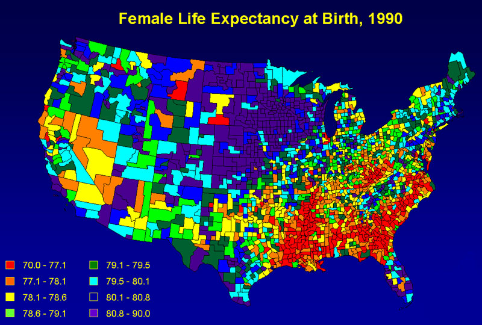
the second is
from www.measureofamerica.org
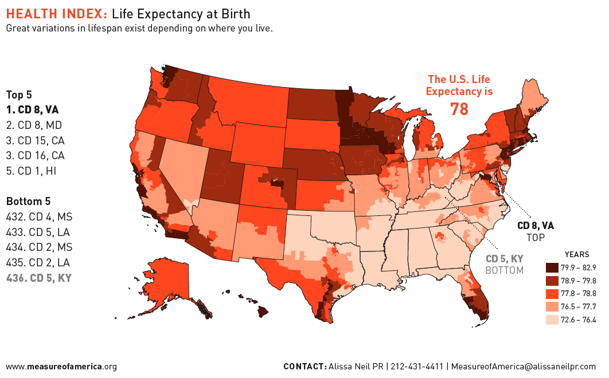
There are
also pictographic symbols
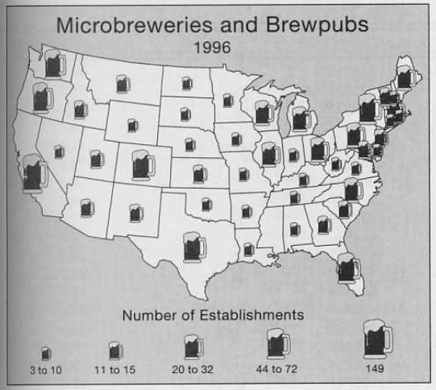
Here its pretty easy to make rough
comparisons - its tricky to make exact comparisons as its hard
to avoid the lie factor we talked about last week. Even avoiding
that, we have to be careful about the conclusions drawn from an
image like this. The states have very different populations (as
we talked about last week comparing Wyoming to California) and
its not directly correlated to the size of the state.
One issue
directly related to the size of the states is the overlap of the
icons in the northeast making it hard to make any sense of the
data there.
Comparison of choropleth, proportional symbol, isopleth,
and dot mapping:
choropleth
- commonly used to portray data
collected for units such as counties or states
- regions are shaded / colored
based on the phenomena - in the example below lightness is used
- good for when values change
abruptly at unit boundaries but hides variation within units,
and the boundaries may be artificial in relation to the
phenomena.
- the units may also be different
sizes, so the raw data may need to be standardized to better
show the underlying phenomena - e.g. California has much more
land mass and more people than Illinois which has more land mass
and people than Rhode Island. The visualization above showing
the raw number of brew pubs may give people the wrong
impression; it might be better to (also) view the number of brew
pubs per million people in each state.
isopleth
(contour map)
- good when data collected was from a smooth continuous
phenomenon
- regions are shaded / colored based on the phenomena - in the
example below lightness is used
- interpolating set of isolines between sample points of known
values
- the data should be standardized
proportional
symbol
- scale symbols in proportion to the magnitude of the data
- symbol might be a true point (located at a data collection
point) or a conceptual point (at the center of a unit)
- normally used to show raw data
dot mapping
- one dot
is set equal to a certain amount of the phenomenon
- dots
should be placed where the phenomena occurs (much higher level
of accuracy than other maps)
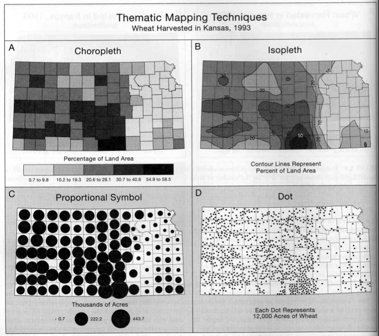
Figure 5.10
from Thematic Cartography
and again
lets go back to our favorite question, how would you enhance these
visualizations if they were software-based?
Selecting
visual variables for choropleth maps
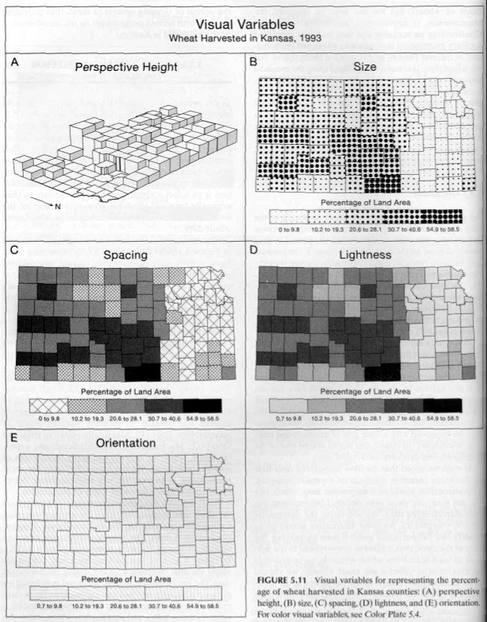
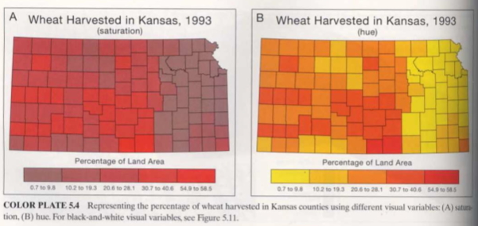
Figure 5.11
from Thematic Cartography
|
Nominal
|
Ordinal
|
Numerical
|
Spacing
|
P
|
Mc
|
Mc
|
Size
|
P |
M
|
M
|
Perspective Height
|
P
|
Ma
|
Gb
|
Orientation
|
G
|
P
|
P
|
Shape
|
G
|
P
|
P
|
Arrangement
|
G
|
P
|
P
|
Lightness
|
P
|
G
|
M
|
Hue
|
G
|
Gd
|
Md
|
Saturation
|
P
|
M
|
M
|
P = Poor
M = Marginally Effective
G = Good
a - Since
height differences are suggestive of numerical differences, use
with caution for ordinal data
b - Hidden
enumeration units and lack of a north orientation are problems
c - Not
aesthetically pleasing
d - The
particular hue selection must be carefully ordered, such as
yellow, orange, red
Here is a good example using
different colour maps for data on high-school graduation
percentages in the US
Here are some other ways of
displaying data from Information Graphics - A
Comprehensive Illustrated Reference
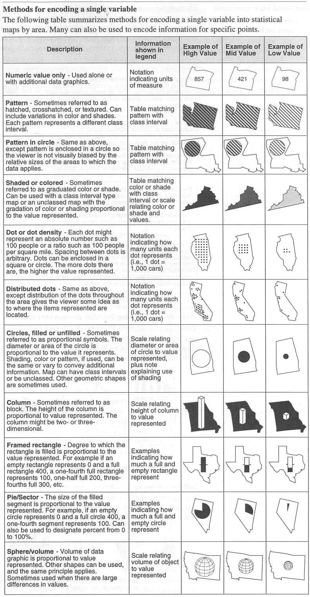
Here is
another New York times example - this time for the 2009
Afghanistan election
http://www.nytimes.com/interactive/2009/09/21/world/asia/0921-afghan-election-analysis.html
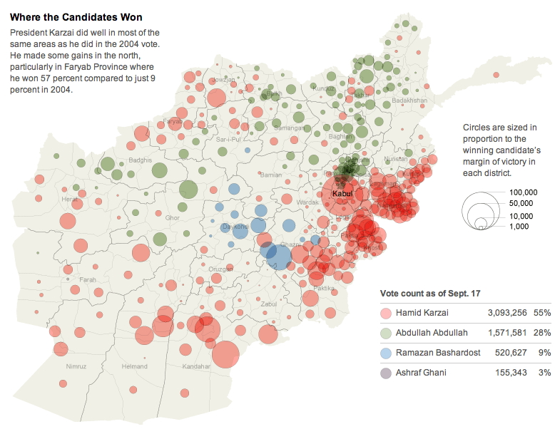
and back to
Information Graphics
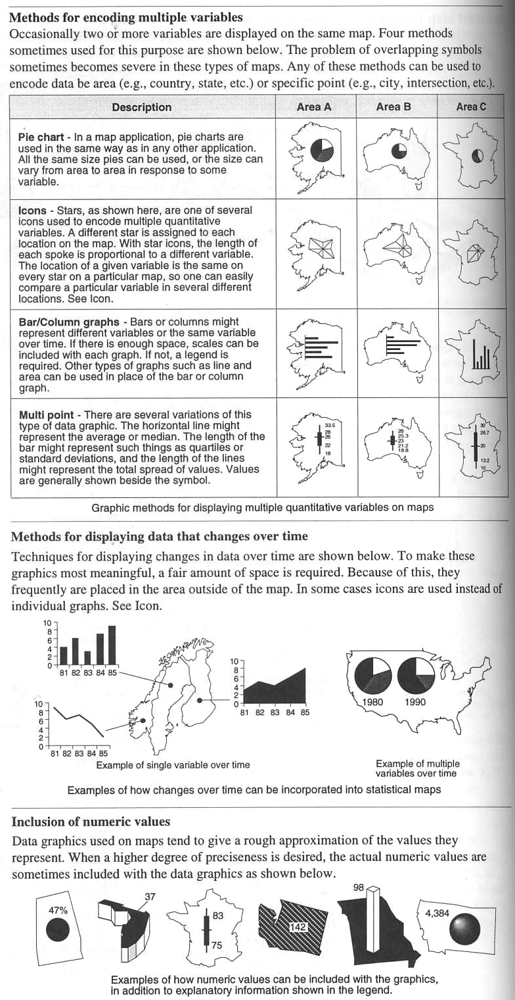
Here is an
image showing crime statistics compared to the average over time
for the US from CommonGIS via the Thematic Cartography and
Geovisualization book
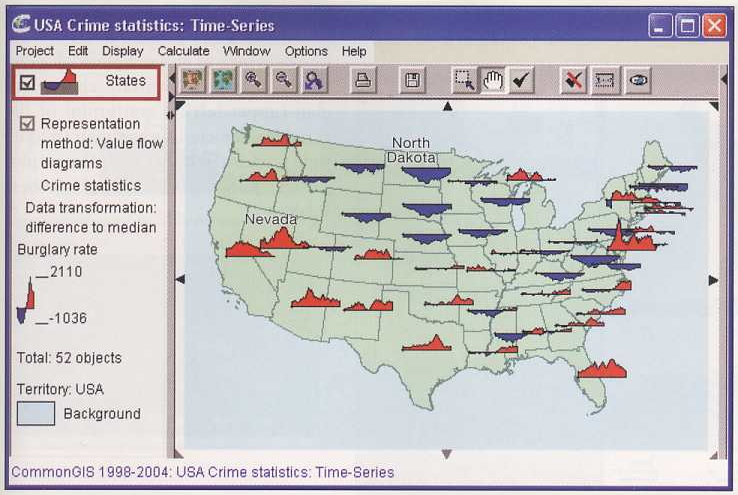
Here are some interesting examples from the US Environmental
Protection Agency: http://www.epa.gov/airtrends/2011/
and here are some other nice more general examples:
http://mapscroll.blogspot.com/
and some H1N1 flu data mapped at:
http://flutracker.rhizalabs.com/
NY Times - Mapping America
http://projects.nytimes.com/census/2010/explorer?ref=us
and here are some variations of the typical red/blue election map
for the 2008 presidential election
http://www-personal.umich.edu/~mejn/election/2008/
and a different way to view election data using dots by John
Nelson
http://uxblog.idvsolutions.com/2012/11/election-2012.html
and a nice interactive processing example: http://benfry.com/zipdecode/
here is a nice map of cell phone strength from cnet
http://reviews.cnet.com/coveragemap/?mode=voice&carrier=att&zoom=12&lon=-122.3943387&lat=37.7905304&maptype=map&overlay=1
When looking at much larger regions
of the planet the issues are a bit more complex. A 'flat' map
can be a good way to see data from all over the planet
simultaneously, but it does add in distortions as the earth is
sphere-ish, and trying to represent a sphere, or even a portion
of it, on a rectangular plane will generate errors. Other tools
like Google Earth can be used to map data onto a spherical Earth
model, but then there are issues of only being able to see part
of the planet at one time.
First some
definitions:
the Earth
rotates about its axis of rotation which passes through the
North and South Poles (and note the North Pole is nowhere near
the North Magnetic Pole)
We can
place a plane halfway between the North Pole and the South Pole
and perpendicular to that axis. Where that plane intersects the
surface of the Earth we have the Equator allowing us to split
the planet into the Northern Hemisphere and the Southern
Hemisphere.
Any point
on the Earth's surface can be given by its Latitude and
Longitude. They are measured in degrees, minutes, and seconds.
Each degree ° is divided into 60 minutes ' and each minute
into 60 seconds ". Any position on the surface of the Earth can
be given by these two angles.
Lines of
latitude (parallels) are parallel to each other and the equator.
The North Pole is 90 degrees North or +90. The equator is 0. The
South Pole is 90 degrees South or -90 degrees.
Lines of
Longitude (meridians) run from pole to pole so they are not
parallel to each other. Where is equator makes a nice 0 point
for latitude there is no obvious 0 point for longitude so the
Prime Meridian is declared to run through the Royal Observatory
in Greenwich England. On the opposite side of the planet from
the Prime Meridian the longitude is 180 degrees west, or +180
degrees and 180 degrees east, or - 180 degrees, and is
mostly where the International Dateline is chosen to exist. The
US is west of the prime meridian.
We are at 41 degrees, 52 minutes, 13 seconds North and 87
degrees, 38 minutes, and 51 seconds West
of course
there is more information on Wikipedia:
http://en.wikipedia.org/wiki/Graticule
another common system in use is UTM http://en.wikipedia.org/wiki/UTM_coordinates
and a big map of them here: http://upload.wikimedia.org/wikipedia/commons/e/ed/Utm-zones.jpg
Data
related to the planet also comes referenced in multiple ways.
Some data will be in feet / meters / miles / kilometers from a
known 0,0 point, some will be given as Latitude, Longitude, some
in UTM coordinates. All of them may need to be combined to
integrate the data.
issues
of different map projections - http://en.wikipedia.org/wiki/Map_projection
and a nice applet http://www.btinternet.com/~se16/js/mapproj.htm
Here is a nice example from FlowingData showing the true size of
Africa - http://flowingdata.com/2010/10/18/true-size-of-africa/
We also often need to deal with data points above / below the
surface of the Earth - e.g. earthquake hypocenters
Often deal with continuous data represented by
discrete sampling
A
familiar example is a weather map showing the current
temperature across the state or country, but the data is only
sampled at certain scattered stations which is then
interpolated. You can click on the map to gain access to the
data files and to see how the data is interpolated across the
state. Here are the sites in Illinois.
http://www.sws.uiuc.edu/warm/icnstationmap.asp
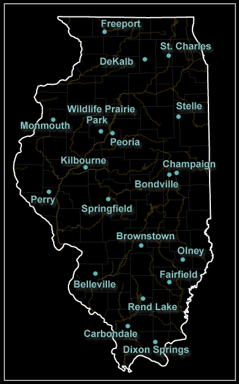
Interpolation
- (nearest neighbor)
- linear
- quadratic
- etc
shepards
method is one way to perform that interpolation - http://en.wikipedia.org/wiki/Inverse_distance_weighting
Here is a nice interactive map showing some of the
information at various monitoring sites: http://www.wunderground.com/wundermap/
Today Google maps and Google earth is a nice common platform to
distribute geospatial information about the earth. http://www.google.com/gadgets/directory?synd=earth&cat=featured&preview=on
Here is a map from the LA Times
that was updated regularly during the Los Angeles 'Station Fire'
in August 09 to show where the fire was believed to be, where it
seemed to be headed, and where important places in the news were
located. Its not an overly professional job but it works really
well to give current information about a fast changing news
story.
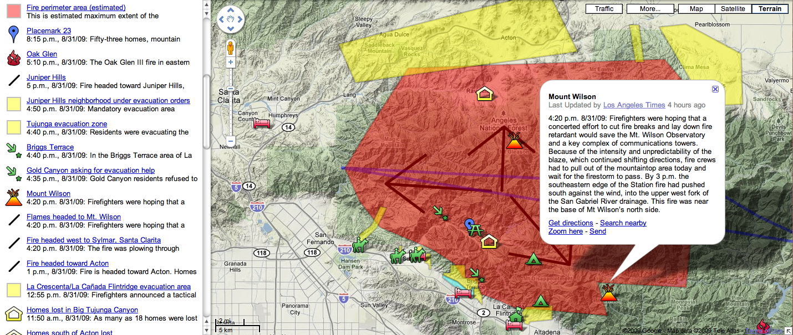
Project Vulcan has a nice tool that makes use of Google earth to
look at CO2 production
http://www.purdue.edu/eas/carbon/vulcan/GEarth/index.html
http://www.youtube.com/watch?v=Iu-s9IHPGmM
Other similar services include Microsoft's Bing Maps (previously
virtual earth) http://www.bing.com/maps/
During the LA 'Station Fire' this map was used to give hourly air
quality reports showing how the affect of the fires reached far
beyond their immediate area.

WorldProcessor
has
some rather nice visualizations using the globe as a backdrop -
some more literal than others - http://worldprocessor.com/catalog/world/
A related issue is how those fancy
maps are put together. When you use Google maps / earth you may
notice different map providers at different zoom levels. Some of
the images are taken by satellite, some by airplanes. They all
need to be geo-referenced and then stitched together to form
those seamless images.
These large images are then typically broken down into regular
sized images (say 512 x 512 pixels) making them easy to cache
and move in and out of memory. Image pyramids are also
generated, e.g. a 3 x 3 matrix of 512 x 512 images are combined
into a single 512 x 512 image at a higher level allowing fast
interactive browsing at multiple scales.
Coming Next Time
Privacy
last
revision 12/18/12
{kind=link}